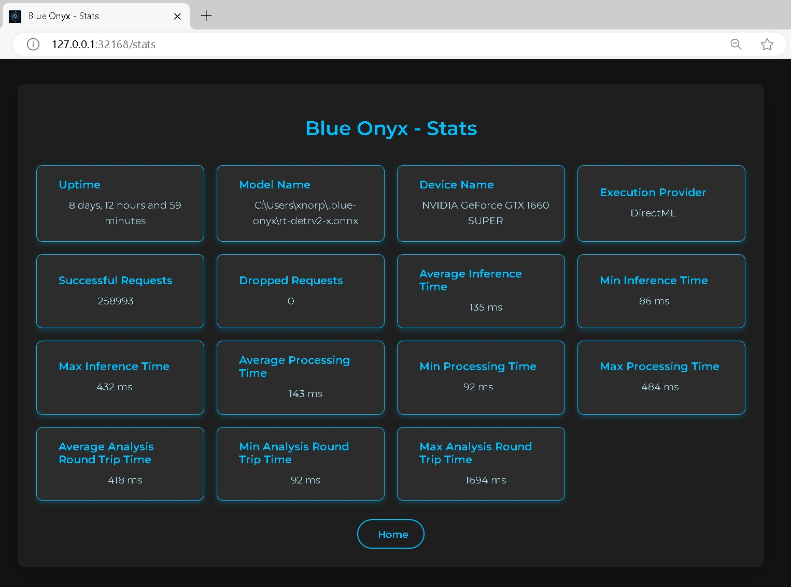

Blue Onyx Object Detection Service
Blue Onyx is a simple and reliable object detection server designed for local use. Built in Rust on top of the ONNX runtime, it offers a dependable inference engine.
This led to the question: can this be done in a simpler, more robust way than other solutions?
To avoid the feature creep that plagues other solutions, Blue Onyx is designed to address specific problems (object detection). Its main goals are stability, ease of upgrade, and decent performance across a wide range of consumer hardware.
With this philosophy, Blue Onyx is designed with certain limitations. It is unlikely to support:
- Specialized NPU/TPU hardware
- Dynamic switching of multiple models at runtime (instead, run multiple Blue Onyx instances)
These constraints help maintain the service's simplicity and robustness.
For example, if you are using an x86 Windows or standard Linux distribution with a consumer CPU/GPU combo and need a stable object detection service that works with new state-of-the-art models, Blue Onyx might be right for you.
Once, during an all-hands meeting at a company I worked for that had just been acquired by a big tech firm, a Linux engineer asked the CEO of the big tech firm if we would continue to support all the various hardware we currently supported. The CEO responded, "we cannot support all different toasters out there."

Windows Installation
This guide covers installing Blue Onyx on Windows, including both standalone usage and Windows service installation.
Prerequisites
- Windows 10 or later (x86_64)
- PowerShell (pre-installed on Windows 10+)
- Internet connection for downloading Blue Onyx and models
Optional: GPU Acceleration
For GPU acceleration, ensure you have compatible drivers:
- NVIDIA GPU: Latest GeForce or Quadro drivers
- AMD GPU: Latest Radeon drivers
- Intel GPU: Latest Intel Graphics drivers
Installation Methods
Method 1: Windows Installer (Recommended)
The easiest way to install Blue Onyx is using the official Windows installer:
-
Download the Installer:
- Go to Blue Onyx Releases
- Download
blue_onyx-X.Y.Z-installer.exe(where X.Y.Z is the version number)
-
Run the Installer:
- Right-click the installer and select "Run as administrator"
- Windows will show a UAC prompt - click "Yes" to proceed
- Follow the installation wizard
-
What's Included: The installer includes:
- Binaries:
blue_onyx.exe- Main Blue Onyx applicationblue_onyx_service.exe- Windows service for Blue Onyxblue_onyx_benchmark.exe- Performance benchmarking tooltest_blue_onyx.exe- Testing utilities
- Required DLLs:
DirectML.dll- DirectML library for GPU accelerationonnxruntime.dll- ONNX Runtime library
- Scripts:
install_service.ps1- Install Blue Onyx as a Windows serviceuninstall_service.ps1- Remove the Windows servicewindows_event_logs_to_txt.ps1- Export Windows event logs
- Binaries:
-
Smart Installation Features:
- Automatically checks for existing Blue Onyx Service installation
- Stops the service if it's currently running before updating files
- Installs to
C:\Program Files\blue-onyxby default - Requests administrator privileges automatically
Note: If you're upgrading an existing installation, the installer will automatically stop the running service before updating the files.
Method 2: One-Line Installation Script
This is the fastest way to get Blue Onyx running:
powershell -NoProfile -Command "curl 'https://github.com/xnorpx/blue-onyx/releases/latest/download/install_latest_blue_onyx.ps1' -o 'install_latest_blue_onyx.ps1'; Unblock-File '.\install_latest_blue_onyx.ps1'; powershell.exe -ExecutionPolicy Bypass -File '.\install_latest_blue_onyx.ps1'"
This script will:
- Download the latest Blue Onyx release
- Extract it to
%USERPROFILE%\.blue-onyx\ - Add the directory to your PATH
- Download default models
Method 3: Manual Installation
-
Download the Latest Release:
- Go to Blue Onyx Releases
- Download
blue_onyx-windows-x86_64.zip
-
Extract the Archive:
# Extract to a permanent location Expand-Archive -Path "blue_onyx-windows-x86_64.zip" -DestinationPath "C:\Program Files\BlueOnyx" -
Add to PATH (optional):
# Add to user PATH $env:PATH += ";C:\Program Files\BlueOnyx" # Or add permanently via System Properties > Environment Variables
First Run
Download Models
Before running Blue Onyx, download the required models:
# Navigate to installation directory
cd "C:\Program Files\BlueOnyx"
# Download all models to a models subfolder
.\blue_onyx.exe --download-model-path .\models --download-all-models
# Or download only the default RT-DETR models
.\blue_onyx.exe --download-model-path .\models --download-rt-detr2
Start Blue Onyx
# Run with default settings
.\blue_onyx.exe
# Or specify the downloaded models
.\blue_onyx.exe --model .\models\rt-detrv2-s.onnx
The service will start on http://127.0.0.1:32168 by default.
Install as Windows Service
For production use, install Blue Onyx as a Windows service to start automatically.
Step 1: Run as Administrator
Open PowerShell as Administrator (required for service installation).
Step 2: Create the Service
# Navigate to installation directory
cd "C:\Program Files\BlueOnyx"
# Create service with basic configuration
sc.exe create blue_onyx_service binPath= "C:\Program Files\BlueOnyx\blue_onyx_service.exe --port 32168" start= auto displayname= "Blue Onyx Service"
Step 3: Configure Service (Optional)
For custom configuration, create a JSON config file:
C:\Program Files\BlueOnyx\service_config.json:
{
"port": 32168,
"model": "C:\\Program Files\\BlueOnyx\\models\\rt-detrv2-s.onnx",
"confidence_threshold": 0.5,
"log_path": "C:\\ProgramData\\BlueOnyx\\blue-onyx.log",
"save_stats_path": "C:\\ProgramData\\BlueOnyx\\blue-onyx-stats.json",
"force_cpu": false
}
Then update the service to use the config:
# Update service to use configuration file
sc.exe config blue_onyx_service binPath= "C:\Program Files\BlueOnyx\blue_onyx_service.exe --config C:\Program Files\BlueOnyx\service_config.json"
Step 4: Start the Service
# Start the service
net start blue_onyx_service
# Or use services.msc to manage the service
services.msc
Step 5: Verify Installation
- Open your browser and go to:
http://127.0.0.1:32168/ - You should see the Blue Onyx web interface
- Check Windows Event Viewer for any service errors
Service Management
Common Service Commands
# Start service
net start blue_onyx_service
# Stop service
net stop blue_onyx_service
# Restart service
net stop blue_onyx_service && net start blue_onyx_service
# Delete service (if needed)
net stop blue_onyx_service
sc.exe delete blue_onyx_service
View Service Logs
If logging to file is configured, check the log files:
# View recent logs
Get-Content "C:\ProgramData\BlueOnyx\blue-onyx.log" -Tail 50
# Monitor logs in real-time
Get-Content "C:\ProgramData\BlueOnyx\blue-onyx.log" -Wait -Tail 10
Configuration Examples
Basic Home Security Setup
{
"port": 32168,
"model": "C:\\Program Files\\BlueOnyx\\models\\rt-detrv2-s.onnx",
"confidence_threshold": 0.6,
"object_filter": ["person", "car", "bicycle", "motorcycle"],
"log_level": "Info",
"force_cpu": false
}
High-Performance Setup (GPU Required)
{
"port": 32168,
"model": "C:\\Program Files\\BlueOnyx\\models\\rt-detrv2-l.onnx",
"confidence_threshold": 0.5,
"force_cpu": false,
"gpu_index": 0,
"intra_threads": 4,
"inter_threads": 2,
"save_image_path": "C:\\ProgramData\\BlueOnyx\\processed_images",
"save_stats_path": "C:\\ProgramData\\BlueOnyx\\blue-onyx-stats.json"
}
Delivery Detection Setup
{
"port": 32168,
"model": "C:\\Program Files\\BlueOnyx\\models\\delivery.onnx",
"object_detection_model_type": "Yolo5",
"confidence_threshold": 0.7,
"log_level": "Info"
}
Troubleshooting
Installation Issues
PowerShell Execution Policy Error:
# Fix execution policy
Set-ExecutionPolicy -ExecutionPolicy RemoteSigned -Scope CurrentUser
Download Failures:
- Check internet connectivity
- Try running PowerShell as Administrator
- Disable antivirus temporarily during installation
Service Issues
Service Won't Start:
- Check Windows Event Viewer (Windows Logs > Application)
- Verify file paths in service configuration
- Ensure models are downloaded correctly
- Check port availability
Port Already in Use:
# Find what's using port 32168
netstat -ano | findstr :32168
# Kill the process if needed (replace PID)
taskkill /PID 1234 /F
Performance Issues
GPU Not Being Used:
- Check GPU drivers are up to date
- Verify GPU supports required compute capabilities
- Try different
gpu_indexvalues - Check Windows Device Manager for GPU status
High CPU Usage:
- Try a smaller model (rt-detrv2-s instead of rt-detrv2-l)
- Reduce
intra_threadsandinter_threads - Consider using
force_cpu: falseto enable GPU
Uninstallation
Remove Service
# Stop and delete service
net stop blue_onyx_service
sc.exe delete blue_onyx_service
Remove Files
# Remove installation directory
Remove-Item -Recurse -Force "C:\Program Files\BlueOnyx"
# Remove user data (optional)
Remove-Item -Recurse -Force "$env:USERPROFILE\.blue-onyx"
# Remove program data (optional)
Remove-Item -Recurse -Force "C:\ProgramData\BlueOnyx"
Remove from PATH
Remove the Blue Onyx directory from your PATH environment variable via:
- System Properties > Environment Variables, or
- Edit the PATH variable directly
Next Steps
- Getting Started - Basic usage and testing
- Configuration - Detailed configuration options
- Models - Choose the right model for your use case
- Blue Iris Integration - Integrate with Blue Iris 5
Linux Installation
This guide covers installing Blue Onyx on Linux using Docker, which is the recommended method for Linux deployment.
Prerequisites
- Linux distribution with Docker support
- Docker Engine 20.10+ and Docker Compose (optional)
- Internet connection for downloading images and models
Docker Installation (Recommended)
Quick Start with Docker
# Pull the latest image
docker pull ghcr.io/xnorpx/blue_onyx:latest
# Run with default settings
docker run -p 32168:32168 ghcr.io/xnorpx/blue_onyx:latest
The service will be available at http://localhost:32168.
Docker Run with Volume Mounts
For persistent model storage and configuration:
# Create directories for data persistence
mkdir -p ~/blue-onyx/{models,config,logs}
# Download models first (optional)
docker run --rm -v ~/blue-onyx/models:/app/models \
ghcr.io/xnorpx/blue_onyx:latest \
--download-model-path /app/models --download-rt-detr2
# Run with persistent volumes
docker run -d \
--name blue-onyx \
-p 32168:32168 \
-v ~/blue-onyx/models:/app/models \
-v ~/blue-onyx/config:/app/config \
-v ~/blue-onyx/logs:/app/logs \
--restart unless-stopped \
ghcr.io/xnorpx/blue_onyx:latest \
--model /app/models/rt-detrv2-s.onnx \
--log_path /app/logs/blue-onyx.log
Docker Compose (Recommended for Production)
Create a docker-compose.yml file:
version: '3.8'
services:
blue-onyx:
image: ghcr.io/xnorpx/blue_onyx:latest
container_name: blue-onyx
ports:
- "32168:32168"
volumes:
- ./models:/app/models
- ./config:/app/config
- ./logs:/app/logs
- ./processed_images:/app/processed_images
environment:
- RUST_LOG=info
command: >
--config /app/config/blue_onyx_config.json
restart: unless-stopped
healthcheck:
test: ["CMD", "curl", "-f", "http://localhost:32168/"]
interval: 30s
timeout: 10s
retries: 3
start_period: 40s
# Optional: nginx reverse proxy
nginx:
image: nginx:alpine
container_name: blue-onyx-proxy
ports:
- "80:80"
- "443:443"
volumes:
- ./nginx.conf:/etc/nginx/nginx.conf:ro
- ./ssl:/etc/nginx/ssl:ro
depends_on:
- blue-onyx
restart: unless-stopped
Configuration file (config/blue_onyx_config.json):
{
"port": 32168,
"model": "/app/models/rt-detrv2-s.onnx",
"confidence_threshold": 0.5,
"log_level": "Info",
"log_path": "/app/logs/blue-onyx.log",
"save_image_path": "/app/processed_images",
"save_stats_path": "/app/logs/blue-onyx-stats.json",
"force_cpu": false,
"request_timeout": 30,
"intra_threads": 2,
"inter_threads": 2
}
Start the services:
# Start services
docker-compose up -d
# Download models
docker-compose exec blue-onyx blue_onyx --download-model-path /app/models --download-rt-detr2
# View logs
docker-compose logs -f blue-onyx
Model Management
Download Models with Docker
# Download all models
docker run --rm -v $(pwd)/models:/app/models \
ghcr.io/xnorpx/blue_onyx:latest \
--download-model-path /app/models --download-all-models
# Download only RT-DETR models
docker run --rm -v $(pwd)/models:/app/models \
ghcr.io/xnorpx/blue_onyx:latest \
--download-model-path /app/models --download-rt-detr2
# Download only YOLO5 specialized models
docker run --rm -v $(pwd)/models:/app/models \
ghcr.io/xnorpx/blue_onyx:latest \
--download-model-path /app/models --download-yolo5
# List available models
docker run --rm ghcr.io/xnorpx/blue_onyx:latest --list-models
Using Different Models
# Use a larger RT-DETR model
docker run -p 32168:32168 \
-v $(pwd)/models:/app/models \
ghcr.io/xnorpx/blue_onyx:latest \
--model /app/models/rt-detrv2-l.onnx
# Use a YOLO5 specialized model
docker run -p 32168:32168 \
-v $(pwd)/models:/app/models \
ghcr.io/xnorpx/blue_onyx:latest \
--model /app/models/delivery.onnx \
--object-detection-model-type yolo5
Advanced Configuration
GPU Support (Experimental)
GPU support in Docker requires additional setup:
# Install nvidia-docker2 (NVIDIA GPUs only)
curl -s -L https://nvidia.github.io/nvidia-docker/gpgkey | sudo apt-key add -
distribution=$(. /etc/os-release;echo $ID$VERSION_ID)
curl -s -L https://nvidia.github.io/nvidia-docker/$distribution/nvidia-docker.list | sudo tee /etc/apt/sources.list.d/nvidia-docker.list
sudo apt-get update && sudo apt-get install -y nvidia-docker2
sudo systemctl restart docker
# Run with GPU support
docker run --gpus all -p 32168:32168 \
ghcr.io/xnorpx/blue_onyx:latest \
--gpu_index 0
Reverse Proxy with SSL
nginx.conf example:
events {
worker_connections 1024;
}
http {
upstream blue-onyx {
server blue-onyx:32168;
}
server {
listen 80;
server_name your-domain.com;
return 301 https://$server_name$request_uri;
}
server {
listen 443 ssl http2;
server_name your-domain.com;
ssl_certificate /etc/nginx/ssl/cert.pem;
ssl_certificate_key /etc/nginx/ssl/key.pem;
location / {
proxy_pass http://blue-onyx;
proxy_set_header Host $host;
proxy_set_header X-Real-IP $remote_addr;
proxy_set_header X-Forwarded-For $proxy_add_x_forwarded_for;
proxy_set_header X-Forwarded-Proto $scheme;
# Increase timeouts for large image uploads
proxy_connect_timeout 60s;
proxy_send_timeout 60s;
proxy_read_timeout 60s;
client_max_body_size 50M;
}
}
}
Systemd Service (Alternative to Docker)
If you prefer not to use Docker, you can run Blue Onyx as a systemd service:
blue-onyx.service:
[Unit]
Description=Blue Onyx Object Detection Service
After=network.target
[Service]
Type=simple
User=blue-onyx
Group=blue-onyx
WorkingDirectory=/opt/blue-onyx
ExecStart=/opt/blue-onyx/blue_onyx --config /etc/blue-onyx/config.json
Restart=always
RestartSec=10
StandardOutput=journal
StandardError=journal
[Install]
WantedBy=multi-user.target
# Create user and directories
sudo useradd -r -s /bin/false blue-onyx
sudo mkdir -p /opt/blue-onyx /etc/blue-onyx /var/log/blue-onyx
sudo chown blue-onyx:blue-onyx /opt/blue-onyx /var/log/blue-onyx
# Download and install binary (you'll need to build from source)
# Copy binary to /opt/blue-onyx/blue_onyx
# Install and start service
sudo cp blue-onyx.service /etc/systemd/system/
sudo systemctl daemon-reload
sudo systemctl enable blue-onyx
sudo systemctl start blue-onyx
Docker Management
Container Management
# View running containers
docker ps
# Stop Blue Onyx
docker stop blue-onyx
# Start Blue Onyx
docker start blue-onyx
# View logs
docker logs -f blue-onyx
# Execute commands in container
docker exec -it blue-onyx /bin/sh
# Remove container
docker rm blue-onyx
# Remove image
docker rmi ghcr.io/xnorpx/blue_onyx:latest
Updates
# Pull latest image
docker pull ghcr.io/xnorpx/blue_onyx:latest
# Stop and remove old container
docker stop blue-onyx
docker rm blue-onyx
# Run new container
docker run -d --name blue-onyx -p 32168:32168 \
-v ~/blue-onyx/models:/app/models \
-v ~/blue-onyx/config:/app/config \
--restart unless-stopped \
ghcr.io/xnorpx/blue_onyx:latest
With Docker Compose
# Update and restart
docker-compose pull
docker-compose up -d
Monitoring and Logging
View Logs
# Docker logs
docker logs -f blue-onyx
# Docker Compose logs
docker-compose logs -f blue-onyx
# Log files (if mounted)
tail -f logs/blue-onyx.log
Health Checks
# Check if service is responding
curl -f http://localhost:32168/
# Check detailed stats
curl http://localhost:32168/stats
# Test detection
curl -X POST -F "image=@test.jpg" http://localhost:32168/detect
Performance Monitoring
# Monitor container resources
docker stats blue-onyx
# Monitor with htop/top inside container
docker exec -it blue-onyx top
Troubleshooting
Common Issues
Container Won't Start:
# Check logs for errors
docker logs blue-onyx
# Check if port is in use
sudo netstat -tlpn | grep :32168
# Check file permissions
ls -la ~/blue-onyx/
Model Download Failures:
# Manual model download
docker run --rm -v $(pwd)/models:/app/models \
ghcr.io/xnorpx/blue_onyx:latest \
--download-model-path /app/models --download-rt-detr2
# Check network connectivity
docker run --rm ghcr.io/xnorpx/blue_onyx:latest ping -c 3 huggingface.co
Performance Issues:
# Check CPU/memory usage
docker stats blue-onyx
# Use smaller model
docker run -p 32168:32168 \
-v $(pwd)/models:/app/models \
ghcr.io/xnorpx/blue_onyx:latest \
--model /app/models/rt-detrv2-s.onnx \
--force_cpu
Debug Mode
# Run with debug logging
docker run -p 32168:32168 \
-e RUST_LOG=debug \
ghcr.io/xnorpx/blue_onyx:latest \
--log_level Debug
Security Considerations
Network Security
- Run Blue Onyx behind a reverse proxy with SSL
- Use firewall rules to restrict access
- Consider VPN access for remote use
Container Security
# Run with non-root user
docker run --user 1000:1000 \
-p 32168:32168 \
ghcr.io/xnorpx/blue_onyx:latest
# Use read-only filesystem
docker run --read-only \
--tmpfs /tmp \
-p 32168:32168 \
ghcr.io/xnorpx/blue_onyx:latest
Next Steps
- Getting Started - Basic usage and testing
- Configuration - Detailed configuration options
- Models - Choose the right model for your use case
- Blue Iris Integration - Integrate with Blue Iris 5
Binaries
Blue Onyx provides several different binaries for different use cases. Each binary is designed for specific scenarios and usage patterns.
Available Binaries
blue_onyx.exe / blue_onyx
The main Blue Onyx server application.
Purpose: Primary HTTP server for object detection Use Case: Development, testing, and standalone deployment Platform: Windows (.exe) and Linux
Features:
- HTTP API server for object detection
- Model management and automatic downloading
- Web interface for testing
- Configuration via CLI or JSON file
- Real-time object detection via REST API
Example Usage:
# Start with default settings
blue_onyx
# Start with custom configuration
blue_onyx --port 8080 --confidence_threshold 0.7
# Download models before starting
blue_onyx --download-model-path ./models --download-rt-detr2
blue_onyx_service.exe
Windows service-specific binary.
Purpose: Run Blue Onyx as a Windows service Use Case: Production deployments on Windows servers Platform: Windows only
Features:
- Designed to run as a Windows service
- Automatic startup on boot
- Service management integration
- Background operation without user session
Example Usage:
# Install as Windows service
sc.exe create blue_onyx_service binPath= "C:\Program Files\BlueOnyx\blue_onyx_service.exe --port 32168" start= auto displayname= "Blue Onyx Service"
# Start the service
net start blue_onyx_service
blue_onyx_benchmark.exe / blue_onyx_benchmark
Performance benchmarking tool.
Purpose: Benchmark model performance and system capabilities Use Case: Performance testing, model comparison, hardware evaluation Platform: Windows (.exe) and Linux
Features:
- Model performance benchmarking
- Hardware utilization testing
- Inference speed measurement
- Memory usage analysis
- GPU vs CPU performance comparison
Example Usage:
# Benchmark default model
blue_onyx_benchmark
# Benchmark specific model
blue_onyx_benchmark --model ./models/rt-detrv2-l.onnx
# Benchmark with specific settings
blue_onyx_benchmark --model ./models/rt-detrv2-s.onnx --force_cpu
test_blue_onyx.exe / test_blue_onyx
Testing and validation utility.
Purpose: Validate Blue Onyx installation and functionality Use Case: Installation verification, debugging, CI/CD testing Platform: Windows (.exe) and Linux
Prerequisites: Requires a running Blue Onyx instance to test against (starts blue_onyx server first)
Features:
- Installation validation
- Model loading tests
- API endpoint testing (tests live HTTP endpoints)
- Configuration validation
- System requirements checking
- Performance testing with live requests
Example Usage:
# Start Blue Onyx server first
blue_onyx &
# Then run all tests against the running instance
test_blue_onyx
# Test specific functionality
test_blue_onyx --test model_loading
# Test with custom configuration (server must be running with same config)
test_blue_onyx --config ./test_config.json
Binary Comparison
| Binary | Purpose | Use Case | Web UI | Service Mode | Benchmarking |
|---|---|---|---|---|---|
| blue_onyx | Main server | Development/Standalone | ✅ | ❌ | ❌ |
| blue_onyx_service | Windows service | Production (Windows) | ✅ | ✅ | ❌ |
| blue_onyx_benchmark | Performance testing | Benchmarking | ❌ | ❌ | ✅ |
| test_blue_onyx | Testing/validation | Debugging/CI | ❌ | ❌ | ❌ |
Download and Installation
Pre-built Binaries
Download pre-built binaries from the releases page:
Windows (x86_64):
blue_onyx-windows-x86_64.zip- Contains all Windows binaries
Linux (Docker):
- Use the Docker image:
ghcr.io/xnorpx/blue_onyx:latest
Building from Source
# Clone the repository
git clone https://github.com/xnorpx/blue-onyx.git
cd blue-onyx
# Build all binaries
cargo build --release
# Build specific binary
cargo build --release --bin blue_onyx
cargo build --release --bin blue_onyx_service
cargo build --release --bin blue_onyx_benchmark
cargo build --release --bin test_blue_onyx
Binaries will be available in target/release/.
Usage Scenarios
Development and Testing
For development, debugging, and testing:
# Start main server for development
blue_onyx --port 8080 --log_level Debug
# In another terminal, run tests against the running server
test_blue_onyx
# Benchmark performance during development
blue_onyx_benchmark --model ./models/rt-detrv2-s.onnx
Production Deployment (Windows)
For production Windows servers:
# Install as service
sc.exe create blue_onyx_service binPath= "C:\Program Files\BlueOnyx\blue_onyx_service.exe --config C:\Program Files\BlueOnyx\production.json" start= auto displayname= "Blue Onyx Service"
# Start service
net start blue_onyx_service
# Verify with test tool
test_blue_onyx --config C:\Program Files\BlueOnyx\production.json
Production Deployment (Linux)
For production Linux servers (using Docker):
# Deploy with Docker Compose
docker-compose up -d
# Test the deployment
docker run --rm --network host ghcr.io/xnorpx/blue_onyx:latest test_blue_onyx
Performance Evaluation
For evaluating different models and hardware configurations:
# Compare model performance
blue_onyx_benchmark --model ./models/rt-detrv2-s.onnx > benchmark_small.txt
blue_onyx_benchmark --model ./models/rt-detrv2-l.onnx > benchmark_large.txt
# Test GPU vs CPU performance
blue_onyx_benchmark --model ./models/rt-detrv2-m.onnx --force_cpu > benchmark_cpu.txt
blue_onyx_benchmark --model ./models/rt-detrv2-m.onnx > benchmark_gpu.txt
Command Line Options
Common Options (All Binaries)
Most binaries support these common options:
--help # Display help information
--version # Display version information
--config <file> # Use JSON configuration file
--log_level <level> # Set logging level (Error, Warn, Info, Debug, Trace)
--model <path> # Specify model file path
Server-Specific Options (blue_onyx, blue_onyx_service)
--port <port> # HTTP server port (default: 32168)
--confidence_threshold # Detection confidence threshold (default: 0.5)
--force_cpu # Disable GPU acceleration
--request_timeout # API request timeout
--worker_queue_size # Worker queue size
Download Options (blue_onyx)
--download-model-path <dir> # Download models to directory
--download-all-models # Download all available models
--download-rt-detr2 # Download RT-DETR v2 models
--download-yolo5 # Download YOLO5 specialized models
--list-models # List all available models
Benchmark Options (blue_onyx_benchmark)
--iterations <n> # Number of benchmark iterations
--warmup <n> # Number of warmup iterations
--output <file> # Save benchmark results to file
--detailed # Show detailed per-iteration results
File Locations
Windows
Default installation paths for Windows:
C:\Program Files\BlueOnyx\
├── blue_onyx.exe
├── blue_onyx_service.exe
├── blue_onyx_benchmark.exe
├── test_blue_onyx.exe
├── models\
├── config\
└── logs\
User-specific paths:
%USERPROFILE%\.blue-onyx\
├── models\
├── config\
└── cache\
Linux (Docker)
Container paths:
/app/
├── blue_onyx
├── blue_onyx_benchmark
├── test_blue_onyx
├── models/
├── config/
└── logs/
Host-mounted volumes:
~/blue-onyx/
├── models/
├── config/
├── logs/
└── processed_images/
Troubleshooting
Binary Won't Start
Check dependencies:
# Windows: Check for missing DLLs
dumpbin /dependents blue_onyx.exe
# Linux: Check shared libraries
ldd blue_onyx
Verify file permissions:
# Ensure executable permissions
chmod +x blue_onyx
Performance Issues
Use benchmark tool:
# Identify performance bottlenecks
blue_onyx_benchmark --detailed --model ./models/rt-detrv2-s.onnx
Check resource usage:
# Monitor while running
top -p $(pgrep blue_onyx)
Service Issues (Windows)
Check service status:
# View service details
sc.exe query blue_onyx_service
# Check service logs
Get-EventLog -LogName Application -Source "blue_onyx_service"
Validation Issues
Run tests:
# Validate installation
test_blue_onyx --verbose
# Test specific configuration
test_blue_onyx --config ./test_config.json
Next Steps
- Getting Started - Learn how to use the main blue_onyx binary
- Windows Service - Set up blue_onyx_service for production
- Benchmark - Use blue_onyx_benchmark for performance testing
- Configuration - Configure binaries for your use case
Getting Started
This guide will help you get Blue Onyx up and running quickly with automatic model downloads.
Quick Start
Windows
-
Download and Install (one-liner):
powershell -NoProfile -Command "curl 'https://github.com/xnorpx/blue-onyx/releases/latest/download/install_latest_blue_onyx.ps1' -o 'install_latest_blue_onyx.ps1'; Unblock-File '.\install_latest_blue_onyx.ps1'; powershell.exe -ExecutionPolicy Bypass -File '.\install_latest_blue_onyx.ps1'" -
Run Blue Onyx:
blue_onyxOn first run, Blue Onyx will automatically download the default model (
rt-detrv2-s.onnx) and start the service on port 32168. -
Test the Service: Open your browser and go to:
http://127.0.0.1:32168/
Linux (Docker)
# Pull and run the Docker container
docker pull ghcr.io/xnorpx/blue_onyx:latest
docker run -p 32168:32168 ghcr.io/xnorpx/blue_onyx:latest
Model Management
Blue Onyx automatically manages models for you, but you can also download them manually for better control.
Automatic Model Download
By default, Blue Onyx will:
- Use
rt-detrv2-s.onnxas the default model - Automatically download the model and its YAML file on first run
- Download to the current working directory or specify with
--model
Manual Model Download
To download models ahead of time or to a specific location:
# Download all available models to binary directory (simplest)
blue_onyx --download-all-models
# Download only RT-DETR v2 models to binary directory (recommended for general use)
blue_onyx --download-rt-detr2
# Download only YOLO5 specialized models to binary directory (for IP cameras/delivery)
blue_onyx --download-yolo5
# Download to a specific directory
blue_onyx --download-all-models --download-model-path ./models
blue_onyx --download-rt-detr2 --download-model-path ./models
# List all available models
blue_onyx --list-models
Using a Specific Model
# Use a larger RT-DETR model for better accuracy
blue_onyx --model ./models/rt-detrv2-l.onnx
# Use a specialized YOLO5 model for delivery detection
blue_onyx --model ./models/delivery.onnx --object-detection-model-type yolo5
Configuration
Basic Configuration
# Run on a different port
blue_onyx --port 8080
# Increase confidence threshold (fewer, more confident detections)
blue_onyx --confidence_threshold 0.7
# Force CPU usage (disable GPU acceleration)
blue_onyx --force_cpu
# Enable debug logging
blue_onyx --log_level Debug
Configuration File
For complex setups, use a JSON configuration file:
config.json:
{
"port": 8080,
"confidence_threshold": 0.7,
"model": "./models/rt-detrv2-l.onnx",
"log_level": "Info",
"force_cpu": false,
"object_filter": ["person", "car", "bicycle"]
}
Run with config:
blue_onyx --config config.json
Testing Object Detection
Using the Web Interface
- Open
http://127.0.0.1:32168/in your browser - Upload an image or use the test endpoint
- View detection results with bounding boxes
Using curl
# Test with an image file
curl -X POST -F "image=@test_image.jpg" http://127.0.0.1:32168/detect
# Test with a URL
curl -X POST -H "Content-Type: application/json" \
-d '{"url": "https://example.com/image.jpg"}' \
http://127.0.0.1:32168/detect
Next Steps
- Models - Learn about available models and their use cases
- Configuration - Detailed configuration options
- Windows Service - Run Blue Onyx as a Windows service
- Integration - Integrate with Blue Iris 5
Troubleshooting
Common Issues
Service won't start:
- Check if the port (32168) is already in use
- Verify the model files are downloaded correctly
- Check the logs for error messages
Poor detection performance:
- Try a larger model (e.g.,
rt-detrv2-l.onnx) - Adjust the confidence threshold
- Ensure GPU acceleration is working if available
Model download failures:
- Check internet connectivity
- Verify disk space is available
- Try downloading to a different directory
GPU not being used:
- Check that GPU drivers are installed
- Verify that the GPU supports the required compute capabilities
- Try setting
--gpu_indexto a different value if multiple GPUs are present
For more detailed troubleshooting, see the FAQ.
Configuration
Blue Onyx supports both command-line arguments and JSON configuration files, making it easy to manage complex configurations and deploy consistent settings across different environments.
Command Line vs Configuration Files
Blue Onyx offers two distinct configuration modes:
Command Line Arguments
Use traditional command-line arguments for quick setup and testing:
blue_onyx --port 8080 --confidence_threshold 0.7 --log_level Debug
Configuration File
Create a JSON configuration file for persistent, complete settings:
blue_onyx --config production.json
Important: When using a configuration file, it completely replaces command-line defaults. You cannot mix config files with additional CLI arguments - it's either one or the other for clarity and simplicity.
Configuration Behavior Examples
Using CLI Arguments Only
# All settings via command line
blue_onyx --port 8080 --confidence_threshold 0.7 --log_level Debug --save_image_path "C:\Temp\images"
Using Configuration File Only
# All settings from config file, no additional CLI arguments allowed
blue_onyx --config my_settings.json
Invalid: Mixing Config File and CLI Arguments
# ❌ This won't work - you can't mix config file with other arguments
blue_onyx --config my_settings.json --port 9090
The above command will load all settings from my_settings.json and ignore the --port 9090 argument entirely.
Configuration File Format
All command-line options are available in the JSON configuration format. Here are platform-specific examples:
Windows Configuration Example
{
"port": 8080,
"request_timeout": 30,
"worker_queue_size": 10,
"model": "C:\\BlueOnyx\\Models\\custom-model.onnx",
"object_detection_model_type": "RtDetrv2",
"object_classes": "C:\\BlueOnyx\\Config\\custom-classes.yaml",
"object_filter": ["person", "car", "bicycle"],
"log_level": "Info",
"log_path": "C:\\ProgramData\\BlueOnyx\\blue-onyx.log",
"confidence_threshold": 0.7,
"force_cpu": false,
"intra_threads": 4,
"inter_threads": 2,
"save_image_path": "C:\\Temp\\processed_images",
"save_ref_image": true,
"gpu_index": 0,
"save_stats_path": "C:\\ProgramData\\BlueOnyx\\blue-onyx-stats.json"
}
Linux/macOS Configuration Example
{
"port": 8080,
"request_timeout": 30,
"worker_queue_size": 10,
"model": "/opt/blue-onyx/models/custom-model.onnx",
"object_detection_model_type": "RtDetrv2",
"object_classes": "/etc/blue-onyx/custom-classes.yaml",
"object_filter": ["person", "car", "bicycle"],
"log_level": "Info",
"log_path": "/var/log/blue-onyx.log",
"confidence_threshold": 0.7,
"force_cpu": false,
"intra_threads": 4,
"inter_threads": 2,
"save_image_path": "/tmp/processed_images",
"save_ref_image": true,
"gpu_index": 0,
"save_stats_path": "/var/log/blue-onyx-stats.json"
}
Example Configuration Files
Blue Onyx includes platform-specific example configuration files:
- Windows: Use
blue_onyx_config_service_example.jsonas a template for the service - Linux/macOS: Use
blue_onyx_config_example_nix.jsonas a template for Unix systems
Configuration Options
| Option | Type | Default | Description |
|---|---|---|---|
port | number | 32168 | HTTP server port |
request_timeout | number | 15 | Timeout in seconds for detection requests |
worker_queue_size | number | auto | Queue size for detection workers |
model | string | auto | Path to ONNX model file (auto-downloads rt-detrv2-s.onnx if not specified) |
object_detection_model_type | string | "RtDetrv2" | Model type: "RtDetrv2" or "Yolo5" |
object_classes | string | auto | Path to YAML file with object classes (auto-downloaded with model) |
confidence_threshold | number | 0.5 | Minimum confidence for detections |
object_filter | array | [] | Filter results to specific object types |
log_level | string | "Info" | Logging level: Trace, Debug, Info, Warn, Error |
log_path | string | null | Path to log file (if not set, logs to stdout) |
force_cpu | boolean | false | Force CPU inference (disable GPU) |
gpu_index | number | 0 | GPU device index to use |
intra_threads | number | 192/2 | Intra-op thread count (Windows: 192, Linux: 2) |
inter_threads | number | 192/2 | Inter-op thread count (Windows: 192, Linux: 2) |
save_image_path | string | null | Directory to save processed images |
save_ref_image | boolean | false | Save reference images alongside processed ones |
save_stats_path | string | null | Path to save inference statistics |
Model Download Options (CLI Only)
These options are only available via command line and are used for model management:
| Option | Type | Description |
|---|---|---|
--list-models | boolean | List all available models and exit |
Example:
# List available models
blue_onyx --list-models
Note: For model download options, see the Models section which covers downloading and managing models in detail. blue_onyx --download-model-path ./models --download-all-models
Download only RT-DETR models
blue_onyx --download-model-path ./models --download-rt-detr2
List available models
blue_onyx --list-models
**Note**: Download operations exit after completion and do not start the server.
## Environment-Specific Configurations
### Development Configuration
Perfect for local development and debugging:
**Windows:**
```json
{
"port": 3000,
"log_level": "Debug",
"save_image_path": "C:\\Temp\\debug_images",
"save_ref_image": true,
"confidence_threshold": 0.3
}
Linux/macOS:
{
"port": 3000,
"log_level": "Debug",
"save_image_path": "/tmp/debug_images",
"save_ref_image": true,
"confidence_threshold": 0.3
}
Production Configuration
Optimized for production deployments:
Windows:
{
"port": 80,
"log_level": "Warn",
"log_path": "C:\\ProgramData\\BlueOnyx\\blue-onyx.log",
"confidence_threshold": 0.8,
"worker_queue_size": 50,
"save_stats_path": "C:\\ProgramData\\BlueOnyx\\blue-onyx-stats.json"
}
Linux/macOS:
{
"port": 80,
"log_level": "Warn",
"log_path": "/var/log/blue-onyx.log",
"confidence_threshold": 0.8,
"worker_queue_size": 50,
"save_stats_path": "/var/log/blue-onyx-stats.json"
}
High-Performance Configuration
For maximum throughput on powerful hardware:
{
"port": 32168,
"confidence_threshold": 0.6,
"worker_queue_size": 100,
"intra_threads": 8,
"inter_threads": 4,
"gpu_index": 0
}
Automatic Configuration Management
Auto-Save for Standalone Binary
When running the standalone blue_onyx binary without a config file, it automatically saves your current settings to blue_onyx_config.json next to the executable. This makes it easy to capture your working configuration for future use.
Windows Service Configuration
The Blue Onyx Windows service uses a dedicated configuration approach that differs from the standalone binary:
Service Configuration File
- Location:
blue_onyx_config_service.json(same directory as executable) - Auto-creation: Created with default values if it doesn't exist
- No CLI arguments: Service configuration is entirely file-based
Service Installation
Install the service without any command-line arguments:
sc.exe create blue_onyx_service binPath= "C:\path\to\blue_onyx_service.exe" start= auto displayname= "Blue Onyx Service"
Service Configuration Example
Edit blue_onyx_config_service.json to configure the service:
{
"port": 32168,
"log_level": "Info",
"log_path": null,
"confidence_threshold": 0.5,
"force_cpu": false,
"worker_queue_size": 20,
"save_stats_path": "C:\\ProgramData\\blue_onyx_service\\stats.json"
}
Service Logging
If log_path is not specified, the service automatically uses %PROGRAMDATA%\blue_onyx_service for log files.
Best Practices
Configuration Management
- Version control: Store configuration files in version control
- Environment separation: Use different config files for dev/staging/production
- Secrets management: Keep sensitive data in environment variables or secure vaults
- Documentation: Comment complex configurations and maintain examples
Performance Tuning
- Thread counts: Start with defaults, then tune based on your hardware
- Queue sizes: Monitor queue depth and adjust for your workload
- Confidence thresholds: Balance accuracy vs. detection sensitivity
- GPU selection: Use
gpu_indexto select the optimal GPU on multi-GPU systems
Security Considerations
- Port binding: Bind to specific interfaces in production environments
- Log paths: Ensure log directories have appropriate permissions
- File permissions: Restrict access to configuration files containing sensitive settings
- Network access: Consider firewall rules for the configured port
Troubleshooting
Configuration Loading Issues
- Verify JSON syntax using a JSON validator
- Check file permissions and paths
- Review log output for detailed error messages
- Use
--helpto see all available configuration options
Service Configuration Problems
- Ensure
blue_onyx_config_service.jsonis in the same directory as the executable - Check Windows Event Viewer for service-specific errors
- Verify that the service has write permissions to create log files
- Test configuration with the standalone binary first
Models
Blue Onyx supports multiple object detection models from different sources. You can download and use various pre-trained models depending on your specific use case.
Automatic Model Management
Blue Onyx automatically manages models with the following behavior:
- Default Model: If no model is specified,
rt-detrv2-s.onnxis used as the default - Auto-Download: Missing models and their corresponding YAML files are automatically downloaded when needed
- YAML Validation: Both model (.onnx) and metadata (.yaml) files are required and verified before use
- Error Handling: Clear error messages if models cannot be downloaded or loaded
- First Run: On first startup, Blue Onyx will automatically download the default model if not present
This means you can start using Blue Onyx immediately without manually downloading models - the system will handle it automatically.
Available Model Types
Blue Onyx supports two main categories of models:
- RT-DETR v2 Models - General-purpose object detection models
- YOLO5 Specialized Models - IP camera and delivery-focused models
Downloading Models
CLI Download Options
You can download models using the following CLI commands:
# List all available models
blue_onyx --list-models
# Download all models to binary directory (simplest)
blue_onyx --download-all-models
# Download only RT-DETR v2 models to binary directory
blue_onyx --download-rt-detr2
# Download only YOLO5 specialized models to binary directory
blue_onyx --download-yolo5
# Download to a specific directory
blue_onyx --download-all-models --download-model-path ./models
blue_onyx --download-rt-detr2 --download-model-path ./models
blue_onyx --download-yolo5 --download-model-path ./models
# Download both RT-DETR and YOLO5 (equivalent to --download-all-models)
blue_onyx --download-rt-detr2 --download-yolo5
Note: --download-model-path is optional and specifies where to download. If not provided, models are downloaded to the directory where the Blue Onyx binary is located.
Download Behavior
The download logic works as follows:
--download-all-models- Downloads all available models (RT-DETR v2 + YOLO5)--download-rt-detr2 --download-yolo5- Downloads all models (same as above)--download-rt-detr2- Downloads only RT-DETR v2 models--download-yolo5- Downloads only YOLO5 specialized models--download-model-pathalone - Does nothing (you must specify what to download)
Default Location: If no --download-model-path is specified, models are downloaded to the same directory as the Blue Onyx binary.
Model Details
RT-DETR v2 Models
RT-DETR v2 (Real-Time Detection Transformer) models are general-purpose object detection models trained on the COCO dataset. These models offer excellent performance for detecting common objects.
| Model Name | Size | Description | Classes | Source |
|---|---|---|---|---|
| rt-detrv2-s | ~80MB | Small variant - fastest inference | 80 COCO classes | RT-DETR |
| rt-detrv2-ms | ~120MB | Medium-small variant - balanced speed/accuracy | 80 COCO classes | RT-DETR |
| rt-detrv2-m | ~200MB | Medium variant - good balance | 80 COCO classes | RT-DETR |
| rt-detrv2-l | ~300MB | Large variant - higher accuracy | 80 COCO classes | RT-DETR |
| rt-detrv2-x | ~400MB | Extra large variant - highest accuracy | 80 COCO classes | RT-DETR |
Default Model: rt-detrv2-s.onnx is used as the default model when no specific model is specified.
YOLO5 Specialized Models
These are specialized YOLO5 models designed for specific use cases, particularly IP cameras and delivery scenarios.
| Model Name | Size | Description | Specialized For | Source |
|---|---|---|---|---|
| delivery | ~25MB | Package and delivery detection | Delivery trucks, packages, postal workers | CodeProject.AI Custom IPcam Models |
| IPcam-animal | ~25MB | Animal detection for IP cameras | Animals, pets, wildlife | CodeProject.AI Custom IPcam Models |
| ipcam-bird | ~25MB | Bird detection for IP cameras | Birds, flying objects | CodeProject.AI Custom IPcam Models |
| IPcam-combined | ~25MB | Combined detection for IP cameras | Multiple object types optimized for cameras | CodeProject.AI Custom IPcam Models |
| IPcam-dark | ~25MB | Low-light detection for IP cameras | Objects in dark/night conditions | CodeProject.AI Custom IPcam Models |
| IPcam-general | ~25MB | General purpose IP camera detection | General objects optimized for IP cameras | CodeProject.AI Custom IPcam Models |
| package | ~25MB | Package detection | Packages, boxes, deliveries | CodeProject.AI Custom IPcam Models |
Model Sources and References
RT-DETR
- Repository: lyuwenyu/RT-DETR
- Download Source: xnorpx/rt-detr2-onnx
- Paper: "DETRs Beat YOLOs on Real-time Object Detection"
- License: Apache 2.0
- Description: RT-DETR is a real-time object detector that efficiently processes images by eliminating NMS (Non-Maximum Suppression) and using transformer architecture.
YOLO5 Specialized Models
- Repository: MikeLud/CodeProject.AI-Custom-IPcam-Models
- Base Framework: ultralytics/yolov5
- Download Source: xnorpx/blue-onyx-yolo5
- License: AGPL-3.0
- Description: Custom trained YOLO5 models specifically optimized for IP camera scenarios and delivery detection.
⚠️ IMPORTANT LICENSING NOTE: YOLO5 models are licensed under AGPL-3.0, which prohibits commercial use without proper licensing. If your use case does not satisfy the AGPL-3.0 license requirements (e.g., commercial/proprietary applications), you must obtain a commercial license from Ultralytics. For commercial applications, consider using RT-DETR models instead, which are licensed under Apache 2.0.
Using Models
Specifying a Model
You can specify which model to use with the --model parameter:
# Use a specific RT-DETR model
blue_onyx --model ./models/rt-detrv2-l.onnx
# Use a specialized YOLO5 model
blue_onyx --model ./models/delivery.onnx --object-detection-model-type yolo5
Model Requirements
Each model requires two files:
.onnxfile: The actual model weights and architecture.yamlfile: Model metadata including class names and configuration
Both files are automatically downloaded when using the download commands.
Performance Considerations
- RT-DETR Models: Better for general object detection, more accurate on diverse scenes
- YOLO5 Specialized Models: Faster inference, optimized for specific scenarios
- Size vs. Accuracy: Larger models generally provide better accuracy but slower inference
- Hardware: GPU acceleration is recommended for larger models
Troubleshooting
Common Issues
- 404 Errors: Some model files may have naming inconsistencies in the repository
- Network Issues: Download failures due to connectivity problems
- Disk Space: Ensure sufficient disk space for model downloads
- Permissions: Verify write permissions in the target directory
Verification
You can verify downloaded models by checking the file sizes match the expected values in the table above.
Custom Model Training
Important Note
Blue Onyx is NOT a framework for creating custom models or training object detection models. Blue Onyx is an inference server that runs pre-trained ONNX models for object detection. It does not provide training capabilities, data annotation tools, or model development features.
If you need custom object detection models for your specific use case, you will need to train them using appropriate machine learning frameworks and then convert them to ONNX format for use with Blue Onyx.
Computer Vision Object Detection Training Process
Creating custom object detection models is a complex process that involves several stages:
1. Data Collection and Preparation
Dataset Requirements:
- Large dataset: Typically thousands to tens of thousands of images
- Diverse scenarios: Various lighting conditions, angles, backgrounds
- High quality: Clear, well-lit images with good resolution
- Representative data: Images that match your target deployment environment
Data Sources:
- Custom photography/video capture
- Public datasets (COCO, Open Images, etc.)
- Synthetic data generation
- Web scraping (with proper licensing)
2. Data Annotation
Annotation Process:
- Bounding boxes: Draw rectangles around objects of interest
- Class labels: Assign category names to each detected object
- Quality control: Review and validate annotations for accuracy
- Format conversion: Convert to training format (YOLO, COCO, Pascal VOC, etc.)
Annotation Tools:
- Roboflow - Comprehensive platform with annotation, augmentation, and training
- LabelImg - Simple bounding box annotation tool
- CVAT - Computer Vision Annotation Tool
- Labelbox - Enterprise annotation platform
3. Data Augmentation and Preprocessing
Common Augmentations:
- Geometric: Rotation, scaling, flipping, cropping
- Color: Brightness, contrast, saturation adjustments
- Noise: Adding noise, blur, compression artifacts
- Synthetic: Cutout, mixup, mosaic augmentation
Benefits:
- Increases dataset size artificially
- Improves model robustness
- Reduces overfitting
- Better generalization to real-world scenarios
4. Training Process
Training Steps:
- Data splitting: Train/validation/test sets (typically 70/20/10)
- Transfer learning: Start with pre-trained weights (ImageNet, COCO)
- Hyperparameter tuning: Learning rate, batch size, epochs
- Training loop: Iterative optimization with backpropagation
- Validation: Monitor performance on validation set
- Early stopping: Prevent overfitting
Training Infrastructure:
- GPU requirements: NVIDIA GPUs with CUDA support
- Memory: 16GB+ RAM, 8GB+ VRAM recommended
- Storage: Fast SSD for dataset loading
- Cloud options: Google Colab, AWS, Azure, GCP
5. Model Evaluation and Optimization
Evaluation Metrics:
- mAP (mean Average Precision): Standard object detection metric
- Precision/Recall: Class-specific performance
- Inference speed: FPS (Frames Per Second)
- Model size: Memory footprint
For most users, Roboflow provides the most straightforward path from raw images to trained ONNX models ready for Blue Onyx deployment.
TODO
TODO
Statistics Page
Statistics are crucial for understanding your server's performance and identifying whether it is operating efficiently or experiencing overload. The statistics on this page can help you assess these aspects.
You can access the statistics page by default at: http://127.0.0.1:32168/stats
Stats

Uptime
The total time elapsed since Blue Onyx was started.
Model Name
The name of the model, which includes variations such as small (s), medium-small (ms), medium (m), large (l), and extra-large (x). Generally, larger models require more robust hardware and result in slower runtimes but provide higher object detection accuracy. It’s a balance between performance and resource requirements.
Device Name
The name of the device performing the inference.
Execution Provider
This acts as the bridge between the device and the ONNX model processing code. While GPUs typically offer faster performance, CPUs may outperform GPUs in certain scenarios. It's essential to benchmark and test on your specific hardware to determine the optimal choice.
Successful Requests
The total number of detection requests made from Blue Iris and the Test page.
Dropped Requests
The total number of detection requests made from Blue Iris and the Test page that got dropped. Having a few of these is not really a problem, it just means that at some point your service was overloaded. But if this keeps growing then it's an indication that the service cannot handle the amount of request sent to it. So either pace the sending (images from blue iris) or upgrade your hardware.
Timing Statistics
Lower values are better, as the goal is to process as many images as quickly as possible. Consider it in terms of frames per second (FPS). For example, if you have a video camera operating at 15 FPS, each frame must be processed in under approximately 67 ms to maintain real-time processing.
This processing is handled by a separate service that manages encoded JPEG images of various sizes. Therefore, processing speed depends on both image size and inference speed. Larger images take more time to decode and resize. For example:
- 4K Image: Decoding takes around 100 ms, and resizing to 640x640 takes an additional 10 ms.
- 640x480 Image: Decoding takes approximately 3-4 ms, and resizing takes about 1 ms.
It's crucial to monitor the total processing time of input images, not just the inference time. For instance, even if a Coral TPU processes an image in 5 ms, the overall time may still be 110 ms when accounting for decoding and preprocessing.
Key Points:
-
Average Analysis Round Time: The time from when the service receives a request to when it sends a response. If this time closely matches the processing time, it indicates that your server is not overloaded. The inference engine processes one image at a time, managed by a queue.
Examples:
- 1 request every 100 ms with a processing time of 100 ms: The average round-trip time will be approximately 100 ms.
- 2 requests every 100 ms: One request will be queued, waiting for the first to complete, resulting in a maximum round-trip time of 200 ms.
Formula:
Average Analysis Round Time = Queue Time + Processing Time -
Processing Time: Includes all image processing and inference activities, such as decoding, resizing, and inference.
-
Inference Time: The duration from when an image has been decoded and resized to 640x640 until the inference engine returns the boundary boxes. This specifically measures the time spent within the inference engine.
Recommendations:
- Optimize Image Resolution: If your processing time significantly exceeds inference time, consider using lower-resolution streams to reduce decoding and resizing overhead.
- Manage Request Rate: If your round-trip time is much higher than processing time, try to spread out requests to avoid overloading the server. While the server can handle the load by queuing images in memory, the inference engine might process images more efficiently in bulk once warmed up. Use the test client to stress-test and fine-tune this balance.
- Adjust CPU Threads: For CPU-based inference, you can control the number of threads used. Even if the queue and services run on a single thread, the actual CPU inference can utilize multiple threads for better performance.
Performance Goal: An average round-trip request time between 50 - 200 ms is generally acceptable. However, this can vary based on your specific setup and requirements.
Configure Blue Iris
Blue Onyx runs as a service, it has a simple job. It receives a image in jpg format from Blue Iris. It will run it through detection pipeline and it will report if it found any of the objects that the currently used model have if any in the picture. Once Blue Iris get's the response it will act based on this information.
NOTE: BLUE ONYX DOES NOT SUPPORT RUNNING MULTIPLE MODELS IN ONE SERVER, IT'S ONE SERVER ONE MODEL. SETUP MULTIPLE SERVERS AND DUPLICATE STREAMS IF YOU WANT TO RUN SEPARATE MODELS FOR 1 CAMERA.
Setup
See this for general Blue Iris setup: https://youtu.be/jqc1ukrkMmI?si=9cDS3uYp2tQUGbIt&t=1
AI Setup
Please refer to the documentation for more details. For specific Blue Iris questions please reach out to Blue Iris support.
Press the cogwheel in Blue Iris for settings.

Press the AI tab. Replace ip and port as needed.

Then go in to each individual camera setting by right click on the camera and then click Camera Settings.
Then press alert tab and then AI configuration

Here you can override the AI server if you are running multiple instances of Blue Onyx. Avoid using main stream as the service will anyway resize the pictures to smaller resolution and it only cost cpu time to decode large jpg images.
Then go back, right click on the camera again and then press trigger now.
If everything is configured correctly you should see succesful request count increase in the stats page.
Windows Service Configuration for GPU Access
This guide covers the proper configuration of Blue Onyx as a Windows service with optimal GPU/DirectX 12/DirectML access.
Quick Installation
Use the provided PowerShell script for automatic installation:
# Run as Administrator
.\install_service_with_gpu.ps1
Manual Installation
Basic Service Installation
# Create the service with NetworkService account (recommended for GPU access)
sc.exe create blue_onyx_service binPath= "C:\BlueOnyx\blue_onyx_service.exe" start= auto displayname= "Blue Onyx Service" obj= "NT AUTHORITY\NetworkService"
# Configure for desktop interaction (helps with GPU access)
sc.exe config blue_onyx_service type= own type= interact
# Set service description
sc.exe description blue_onyx_service "Blue Onyx AI Object Detection Service with DirectML GPU acceleration"
# Configure failure recovery
sc.exe failure blue_onyx_service reset= 86400 actions= restart/30000/restart/60000/restart/120000
# Set required privileges for GPU access
sc.exe privs blue_onyx_service SeIncreaseQuotaPrivilege/SeAssignPrimaryTokenPrivilege/SeServiceLogonRight/SeCreateGlobalPrivilege
# Start the service
net start blue_onyx_service
Service Account Options
NetworkService (Recommended)
- Best for: Most installations with GPU access requirements
- Pros: Good GPU access, network capabilities, moderate security
- Account:
NT AUTHORITY\NetworkService
LocalSystem
- Best for: Maximum compatibility but reduced security
- Pros: Full system access, best compatibility
- Cons: Runs with highest privileges, security risk
- Account:
LocalSystem
LocalService
- Best for: Highest security, local-only operations
- Pros: Limited privileges, good security
- Cons: Limited GPU access
- Account:
NT AUTHORITY\LocalService
GPU Access Considerations
Session 0 Isolation
Windows services run in Session 0, which has limited access to graphics subsystems. The service includes:
- DirectML Detection: Validates DirectML.dll availability
- DirectX 12 Validation: Checks for GPU adapters and DirectX support
- Environment Variables: Sets optimal DirectML configuration
Required Files
Ensure these files are in the service executable directory:
blue_onyx_service.exeDirectML.dll- Service configuration file
GPU Monitoring
Monitor GPU usage to verify DirectML acceleration:
- Open Task Manager → Performance → GPU
- Look for "DirectML" or "Compute" activity
- Check service logs for GPU detection messages
Configuration
Service Configuration File
Create blue_onyx_config_service.json in the same directory:
{
"port": 32168,
"force_cpu": false,
"gpu_index": 0,
"log_level": "Info",
"confidence_threshold": 0.5,
"model": "C:\\BlueOnyx\\Models\\custom-model.onnx",
"save_stats_path": "C:\\ProgramData\\BlueOnyx\\service_stats.json"
}
Environment Variables
The service automatically sets:
DIRECTML_DEBUG=0: Disable DirectML debug outputD3D12_EXPERIMENTAL_SHADER_MODELS=1: Enable experimental DirectX features
Troubleshooting
GPU Not Detected
- Verify DirectML.dll is present
- Check Windows Event Logs for DirectX errors
- Update GPU drivers
- Try different service account (NetworkService vs LocalSystem)
Service Won't Start
- Check file permissions on service directory
- Verify service account has required privileges
- Review service logs in Event Viewer
- Ensure configuration file is valid JSON
Poor Performance
- Verify GPU is being used (Task Manager)
- Check
force_cpusetting in configuration - Monitor service logs for DirectML initialization
- Consider increasing
gpu_indexif multiple GPUs present
Service Management
# Start service
net start blue_onyx_service
# Stop service
net stop blue_onyx_service
# Check status
sc.exe query blue_onyx_service
# View service configuration
sc.exe qc blue_onyx_service
# Remove service
sc.exe delete blue_onyx_service
Event Logging
The service logs important events to:
- Application Event Log: Service start/stop events
- Service Logs: DirectML and GPU detection (if log_path configured)
Check Event Viewer → Windows Logs → Application for service events.
Security Considerations
- Service Account: Use NetworkService for balanced security and functionality
- File Permissions: Ensure service account has read access to model files
- Network Access: Configure firewall rules for the service port
- Privileges: Service runs with minimal required privileges for GPU access
Performance Optimization
- GPU Selection: Use
gpu_indexto select optimal GPU in multi-GPU systems - Thread Configuration: Adjust
intra_threadsandinter_threadsfor CPU fallback - Model Placement: Store models on fast storage (SSD)
- Memory Management: Monitor memory usage, especially with large models
Service Installation After Using Windows Installer
If you installed Blue Onyx using the Windows installer, follow these steps to set up the service:
Post-Installation Service Setup
-
Open PowerShell as Administrator:
- Right-click on PowerShell and select "Run as Administrator"
-
Navigate to the Installation Directory:
cd "C:\Program Files\blue-onyx\scripts" -
Run the Service Installation Script:
.\install_service.ps1
This script will automatically:
- Set service timeout to 10 minutes (for model loading)
- Create event log source for Blue Onyx
- Install the service to run automatically with LocalSystem privileges
- Configure the service properly
Service Management
After installing the service:
# Start the service
net start BlueOnyxService
# Stop the service
net stop BlueOnyxService
# Check service status
sc.exe query BlueOnyxService
# Remove the service (if needed)
.\uninstall_service.ps1
Manual Service Installation (Alternative)
If the automated script doesn't work, you can manually install the service:
# Run as Administrator
# 1. Set service timeout (10 minutes for model loading)
reg add "HKLM\SYSTEM\CurrentControlSet\Control" /v ServicesPipeTimeout /t REG_DWORD /d 600000 /f
# 2. Create event log source
New-EventLog -LogName Application -Source BlueOnyxService
# 3. Install the service (replace path as needed)
sc.exe create BlueOnyxService binPath= "C:\Program Files\blue-onyx\blue_onyx_service.exe" start= auto displayname= "Blue Onyx Service" obj= LocalSystem
# 4. Configure service type
sc.exe config BlueOnyxService type= own
# 5. Start the service
net start BlueOnyxService
Advanced Service Configuration
-
Service Timeout: Increase timeout for model loading if necessary
reg add "HKLM\SYSTEM\CurrentControlSet\Control" /v ServicesPipeTimeout /t REG_DWORD /d 600000 /f -
Event Logging: Ensure event log source is created
New-EventLog -LogName Application -Source BlueOnyxService -
Service Account: For maximum compatibility, use LocalSystem
sc.exe config blue_onyx_service obj= LocalSystem -
Service Type: Configure service to own process
sc.exe config blue_onyx_service type= own -
Start the Service: After configuration, start the service
net start blue_onyx_service
Architecture
The design of Blue Onyx is very simple. It implements the same HTTP API as other open-source object detection services for compatibility.
/v1/vision/detection
The server is mainly implemented in Rust but utilizes ONNX for inference which is written in C++. So all code is compiled and native.
The HTTP server is implemented in axum which utilizes tokio and runs async in one thread to handle requests. It can handle multiple requests at the same time. Each request is then put on a channel/queue to the worker thread. The worker thread handles the decoding of the image, resizing, and finally running the inference. Once this is done, the results are gathered, and a response is sent back to the task in the main thread that was handling the request.
To ensure optimal performance, it's crucial to use a model that can handle the system's load efficiently. For instance, processing an image every 1-2 seconds might suffice for a single camera. However, with 20 cameras generating high traffic, the processing speed may need to be as fast as 50 milliseconds per image.
When setting up Blue Onyx, the queue size is adjusted based on your timeout (the size of the glass) and the processing speed (how fast we can suck out the water). If the system reaches its capacity, Blue Onyx will return errors and log warnings indicating it is over capacity. While the system will recover, it's essential to ensure sufficient resources and fast hardware to manage the system's load effectively.
Each Blue Onyx instance runs one model. If a user wants to run multiple models on one machine, one can launch multiple Blue Onyx instances running on different ports. The only consideration would be if one run on CPU to assign a subset of cores to each server. For GPU the scheduling is handled by the GPU and multiple processes and threads can share GPU if needed.
- Blue Onyx Server 1 with model 1 on port 32168
- Blue Onyx Server 2 with model 2 on port 32167
This design allows users to host multiple models and lets the system handle scheduling and resources.
Frequently Asked Questions
General Questions
What is Blue Onyx?
Blue Onyx is a reliable object detection service written in Rust using the ONNX runtime. It's designed to be simple, robust, and performant for local object detection needs, particularly for security cameras and automated monitoring systems.
What makes Blue Onyx different from other object detection services?
- Rust-based: Built for reliability and performance
- ONNX Runtime: Industry-standard inference engine
- Automatic Model Management: Downloads and manages models automatically
- Multiple Model Support: RT-DETR v2 and specialized YOLO5 models
- Simple Design: Focused on object detection without feature creep
- Cross-platform: Windows and Linux support
Is Blue Onyx free to use?
Yes, Blue Onyx is open source and free to use. It's licensed under Apache 2.0.
Installation and Setup
How do I install Blue Onyx?
Windows: Use the one-line PowerShell installer:
powershell -NoProfile -Command "curl 'https://github.com/xnorpx/blue-onyx/releases/latest/download/install_latest_blue_onyx.ps1' -o 'install_latest_blue_onyx.ps1'; Unblock-File '.\install_latest_blue_onyx.ps1'; powershell.exe -ExecutionPolicy Bypass -File '.\install_latest_blue_onyx.ps1'"
Linux: Use Docker:
docker pull ghcr.io/xnorpx/blue_onyx:latest
docker run -p 32168:32168 ghcr.io/xnorpx/blue_onyx:latest
What are the system requirements?
Minimum:
- Windows 10 x64 or Linux x64
- 4GB RAM
- 2GB disk space (for models)
- Internet connection (for model downloads)
Recommended:
- 8GB+ RAM
- Dedicated GPU (NVIDIA, AMD, or Intel)
- SSD storage
- Multi-core CPU
Do I need to download models manually?
No! Blue Onyx automatically downloads models when needed. However, you can pre-download them:
# Download all models
blue_onyx --download-model-path ./models --download-all-models
# Download only RT-DETR models
blue_onyx --download-model-path ./models --download-rt-detr2
Models and Performance
Which model should I use?
For general use: rt-detrv2-s.onnx (default) - good balance of speed and accuracy
For higher accuracy: rt-detrv2-l.onnx or rt-detrv2-x.onnx - slower but more accurate
For specialized scenarios:
delivery.onnx- package and delivery detectionIPcam-animal.onnx- animal detectionIPcam-dark.onnx- low-light conditions
How do I check available models?
blue_onyx --list-models
My GPU isn't being used. How do I fix this?
- Check GPU drivers are up to date
- Verify GPU support: Not all GPUs support ONNX acceleration
- Try different GPU index:
--gpu_index 1(if multiple GPUs) - Check compute capability: NVIDIA GPUs need compute capability 6.0+
- Force CPU if needed:
--force_cpufor troubleshooting
How do I improve detection performance?
For speed:
- Use smaller models (
rt-detrv2-s.onnx) - Enable GPU acceleration
- Reduce image resolution before sending
- Lower confidence threshold if getting too few detections
For accuracy:
- Use larger models (
rt-detrv2-l.onnx,rt-detrv2-x.onnx) - Increase confidence threshold
- Use appropriate specialized models for your use case
Configuration and Usage
How do I change the default port?
# Command line
blue_onyx --port 8080
# Configuration file
{
"port": 8080
}
Can I filter for specific objects only?
Yes, use the object_filter parameter:
# Command line
blue_onyx --object_filter person,car,bicycle
# Configuration file
{
"object_filter": ["person", "car", "bicycle"]
}
How do I save processed images?
blue_onyx --save_image_path ./processed_images --save_ref_image
Can I use Blue Onyx with Blue Iris?
Yes! See the Blue Iris Integration Guide for detailed setup instructions.
How do I run Blue Onyx as a Windows service?
# Create service
sc.exe create blue_onyx_service binPath= "C:\Program Files\BlueOnyx\blue_onyx_service.exe --port 32168" start= auto displayname= "Blue Onyx Service"
# Start service
net start blue_onyx_service
Troubleshooting
Blue Onyx won't start
Check port availability:
# Windows
netstat -ano | findstr :32168
# Linux
sudo netstat -tlpn | grep :32168
Check logs:
blue_onyx --log_level Debug
Verify model files:
blue_onyx --list-models
Getting 404 errors during model download
Some model files may have naming inconsistencies in the repository. The download will continue with available files. You can:
- Try downloading again later
- Use alternative models
- Check the models page for known issues
Object detection is slow
Check system resources:
- Monitor CPU/GPU usage
- Ensure sufficient RAM
- Check if GPU acceleration is working
Optimize settings:
- Use a smaller model
- Reduce thread counts on Linux:
--intra_threads 2 --inter_threads 2 - Enable GPU if available
Getting poor detection results
Adjust confidence threshold:
# Lower for more detections (may include false positives)
blue_onyx --confidence_threshold 0.3
# Higher for fewer, more confident detections
blue_onyx --confidence_threshold 0.7
Try a different model:
- Larger RT-DETR models for better accuracy
- Specialized YOLO5 models for specific scenarios
Check image quality:
- Ensure images are clear and well-lit
- Avoid heavily compressed images
- Consider image preprocessing
Docker container issues
Container won't start:
# Check logs
docker logs blue-onyx
# Check if port is in use
sudo netstat -tlpn | grep :32168
Volume mount issues:
# Check permissions
ls -la ~/blue-onyx/
# Fix permissions
sudo chown -R 1000:1000 ~/blue-onyx/
High memory usage
Normal behavior: Model loading requires significant memory (2-8GB depending on model)
Reduce memory usage:
- Use smaller models
- Close other applications
- Monitor with
topor Task Manager
Windows service won't start
Check service configuration:
sc.exe query blue_onyx_service
Check event logs:
Get-EventLog -LogName Application -Source "blue_onyx_service"
Verify file paths: Ensure all paths in service configuration are absolute and accessible
API and Integration
What API endpoints are available?
POST /detect- Detect objects in imagesGET /- Web interfaceGET /stats- Service statisticsGET /test- Test endpoint
How do I send images for detection?
Upload file:
curl -X POST -F "image=@photo.jpg" http://localhost:32168/detect
Send URL:
curl -X POST -H "Content-Type: application/json" \
-d '{"url": "https://example.com/image.jpg"}' \
http://localhost:32168/detect
What response format does the API use?
JSON format with detected objects:
{
"success": true,
"predictions": [
{
"label": "person",
"confidence": 0.95,
"x_min": 100,
"y_min": 50,
"x_max": 200,
"y_max": 300
}
],
"inference_time": 45.2,
"image_id": "abc123"
}
Can I integrate with other systems?
Yes, Blue Onyx provides a standard REST API that can integrate with:
- Security camera systems (Blue Iris, Agent DVR)
- Home automation systems (Home Assistant)
- Custom applications
- Monitoring systems
Advanced Topics
Can I train custom models?
Blue Onyx uses pre-trained ONNX models. To use custom models:
- Train your model in a supported framework (PyTorch, TensorFlow)
- Convert to ONNX format
- Create a corresponding YAML file with class names
- Use with
--modelparameter
How do I benchmark performance?
Use the benchmark tool:
blue_onyx_benchmark --model ./models/rt-detrv2-s.onnx --iterations 100
Can I run multiple instances?
Yes, run on different ports:
# Instance 1
blue_onyx --port 32168 --model ./models/rt-detrv2-s.onnx
# Instance 2
blue_onyx --port 32169 --model ./models/delivery.onnx
How do I update Blue Onyx?
Windows: Re-run the installation script
Linux: Pull the latest Docker image:
docker pull ghcr.io/xnorpx/blue_onyx:latest
Is there a roadmap for future features?
Check the GitHub repository for:
- Current issues and feature requests
- Development roadmap
- Contribution guidelines
Support and Community
Where can I get help?
- Documentation: This book covers most common scenarios
- GitHub Issues: Report bugs or request features
- Discussions: Community discussions on GitHub
How can I contribute?
- Report bugs or suggest features
- Contribute to documentation
- Submit pull requests for improvements
- Share your use cases and configurations
Where are the source code and releases?
- Source: GitHub Repository
- Releases: GitHub Releases
- Docker Images: GitHub Container Registry